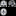

Check covariance
Before statistical analysis data should be carefully checked for problems in image and preprocessing quality and sample homogeneity to improve the statistical power. The CAT Checkcov tool estimates the covariance between each scan to identify outlier from the sample mean. The new version further includes tools to navigate trough large samples, to view preprocessing results, and routines to exclude critical datasets.
The SPM batch window is used to define all inputs. After initialization, first results were displayed in the MATLAB command line before the Checkcov window and the SPM graphics window showed up (Fig. 1). The Checkcov window includes the covariance matrix (left) and main toolbar (right). If quality measures are available (by default in CAT preprocessing) than the Mahanalobis distance plot allows superior outliers detection. It displays the color-coded Mahanalobis distance (MD), the mean correlation (MNC), and the weighed image quality rating (IQR) in one plot (see How to use section).
Fig. 1: The CAT Checkcov tool allows to investigate the homogeneity of large data samples and the detection of outlier due to motion artifacts, preprocessing failures, or unfitting anatomical properties.
Moreover, you can apply the auto exclude function  to get an initial selection of critical scans. Use the navigation and data view tools to investigate borderline scans to decide if you want to exclude more or less images with critical covariance or image quality. Try to include as many scans as possible to improve statistical power. Only remove scans with low image quality or motion artifacts (lower IQR values), failed preprocessing, or untypical anatomy (lower mean correlation).
to get an initial selection of critical scans. Use the navigation and data view tools to investigate borderline scans to decide if you want to exclude more or less images with critical covariance or image quality. Try to include as many scans as possible to improve statistical power. Only remove scans with low image quality or motion artifacts (lower IQR values), failed preprocessing, or untypical anatomy (lower mean correlation).
Covariance: Low covariance can be the result of failed preprocessing, wrong preprocessing parameter, or untypical anatomy (Fig. 2). You should remove all scans with failed preprocessing, e.g., were the scull-stripping removed parts of the brain or include large areas of head tissue (Fig. #A), other miss-classifications of brain tissues, or incorrect normalization results. In case of anatomical reasons of low covariance by extremely large or small ventricle or white matter hyperintensities (WMHs) you have to decide if this is normal property of the research sample, i.e. in an aged population with focus on tissue atrophy you should not remove such images. In contrast to low covariance scans, also high covariance (>0.925) can be critical if your perform a cross-sectional study that should not include rescans of the same subject.
Fig. 2: Images with strongly deviating mean covariance due to failed preprocessing (A), wrong preprocessing parameters, e.g., inactive WMHs correction (B), or untypical anatomy (C).
Image quality: If CAT XML files are available, the quality ratings of each record is extracted to estimate a protocol-normalized IQR rating PIQR. PIQR use the resolution properties of the images to classify different protocols. For each protocol the first major peak of at least 20% of the images defines the optimal protocol quality level, e.g., 84.39 rps. Images with 5 rps lower IQR rating normally show light (motion) artifacts, whereas image with about 10 rps lower rating often have severe (motion) artifacts and should be excluded from analysis. Image with (motion) artifacts are known to lead to different preprocessing result, e.g. less gray matter volume, that artifact free images and can therefore bias the analysis (Reuter et al., 2015). If your data (e.g., children) includes many images (e.g., >30%) with low quality that has to be included for adequate sample size, you should try remove only the worst-cases and to balance your samples or for age in case of development/aging study.

Fig. 3: Motion artifacts can lead to lower (relative) GM volume that can be miss interpreted as tissue atrophy. Hence, it is important to have balanced samples.
SPM batch window
Use the SPM batch window to define your samples (e.g., groups, sites) and nuisance variables (e.g., sex, age; Fig. 4). In most cases you will select normalized gray matter volumes wmp0*.nii or resampled (= normalized) cortical thickness maps s*mm.*h.thickness.resampled.*.gii. But also other normalized volumes or surface maps can be used, such as normalized T1 volumes wm*.nii, fractional anisotropy or functional activation maps, or further surface measures of gyrification, fractal dimension or local intensity (myelination). In case of volumes you can define the separation of slice to reduce processing time. To use nuisance variables, copy data from text-files or tables, where each scan has to get a (sample independent) value.
Fig. 4: The SPM batch window allows to set up different samples and nuisance variables. Here, three samples with 20, 30 and 40 files and two corresponding nuisance variables (with 90 values) were defined.
MATLAB command line window
After initialization Checkcov try to find the original files used for preprocessing, related (resampled) surfaces and further report files (Fig. 5). Next the covariance between each input scan is estimated.
Fig. 5: After starting the Checkcov tool the data is loaded and processed where important information are printed directly to the MATLAB command line.
CAT Checkcov window
The Checkcov main window include graphical main plot with colorbar on the top, a toolbar with different set of buttons, and a window with slices or surface flat-maps of selected scans (Fig. 6). Images can be selected in the covariance matrix (default) or in the Mahanalobis distance plot. Critical images with (motion) artifacts, preprocessing failures, or unfitting anatomy can be exclude via a virtual list that finally allows to remove the listed scans and related files to a separate directory that supports later restoring.
Fig. 6: The Checkcov main window with covariance matrix/Mahanalobis distance plot, toolbars and slice/surface-flat-map view.
The toolbar include
blocks for navigation
,
views of subsets
SAMPLE PROTOCOL,
data checking
 ,
and data ex- and inclusion
 .
.
The navigation block contain the typical MATLAB figure navigation elements for
data selection ,
default zoom ,
zoom in ,
zoom out and
moving .
The data checking block contain buttons to view the
original image(s) ,
surface(s) ,
LOG ,
XML , and
report files .
The data removal block (exclusion-list options) include buttons to create a
new exclusion-list ,
to view the selected files ,
to exclude
or
include
selected elements,
to undo and
redo exclusion operations,
an automatic data exclusion tool  , and
the final data removal option
that moves selected datasets with related scans to an exclusion directory and creating a script to restore this final operation.
, and
the final data removal option
that moves selected datasets with related scans to an exclusion directory and creating a script to restore this final operation.
The auto exclude button  opens a menu that show a normalized histogram of the MNC and IQR variables and two bars to allow softer or harder limits (see CAT Checkcov exclusion window).
opens a menu that show a normalized histogram of the MNC and IQR variables and two bars to allow softer or harder limits (see CAT Checkcov exclusion window).
SPM graphics window
Checkcov use the SPM graphics window to print box and violin plots with small dots of each scan (Fig. 8). Alternatively, you can print the filenames of each scan. The window is not automatically updated while you exclude or include files and you have to use the refresh button . Exclude scans were plotted as red x or filename.

Fig. 8: Different stats of the SPM graphics window, with violin- and box-plot (A & B), original data (C), LOG files (D), XML files (E), and CAT report (F).
CAT Checkcov exclusion window
The exclusion window allows to select scans with low mean covariance (MNC) and/or protocol-based image quality rating (PIQR) by means of their standard deviations. It shows the histogram with sliders to zoom, to modify the bin width, and finally to control the allowed standard deviation. A table conclude group information about mean covariance, image quality, and nuisance variables. The control buttons on the right bottom corner allow to restore the default setting  , show this help , and to reject
, show this help , and to reject  or apply the defined selection.
or apply the defined selection.

CAT Checkcov exclusion window to define outlier their standard deviation of their mean covariance and image quality.
How to use
We suggest to identify outlier in two or more steps, starting with removing scans with severe (motion) artifacts (low IQR) or failed preprocessing (low MNC) that can not be used in any case, and than go on by removing scans with lighter (motion) artifacts or anatomical properties that did not fit to the sample. This allows to restore steps, in case of problematic analysis with to low power and carefully include scans with light artifacts balanced manually for each sample.
First overview: After the Checkcov main window shows up you can start with "check worst" button to view the worst 2 to 24 records to get a fast introduction to problematic data in the SPM graphics window or multiple surface windows. By default all records in the covariance matrix are sorted by sample and your file selection order. This allows you good to identify outlier in general as blue lines/rows (low covariance, i.e., MNC below 0.75), whereas rescans are often visible as single red points (high covariance, MNC above 0.925). You can use the sorted covariance plot of the PLOT menu to get a (sample independent) ordering with high MNC at the top and low MNC at the bottom. Use the navigation tools to zoom in or restrict the view to a specific sample. If quality control information are available (by default for CAT preprocessing), you can also switch to the Mahanalobis distance plot that support a mixed view on mean covariance (MNC) and the weighted image quality rating (IQR).
Principle data analysis: We recommend to start by removing the most obvious datasets, i.e., non-required rescans in cross-sectional data (high MNC), failed preprocessing (low MNC), and severe (motion) artifacts (lower PIQR, e.g. below -2 rps), or generally low image quality (lower IQR, e.g. below 60 rps). Check and modify the list and final remove the data by using the final removal button . It will move all selected files into a exclusion directory with a date-time specific subdirectory that further can include a user specific string for better identification. After removing the most problematic image, you can now go on with less critical cases that you may want to re-include later without restoring the worst cases. Try to include at most images as possible to improve the statistical power!
In case of failed preprocessing (or bad parameter) you may want to try different preprocessing options. But be aware that mixing different parametrization can lead to systematic differences in the results. In case of more than some single scans, you have to account for preprocessing parameter by using the type of parametrization as nuisance variable.
If you remove scans and start the batch it will ignore missing files and just print a message to the command window.
Single data analysis: You can use the auto exclude option  to create an initial selection of critical scans.
Use the data view tools to investigate borderline scans to decide if you want to exclude more or less images with low covariance or image quality. Use the mouse to select records by clicking the data points. This opens a datatip that displays the filename(s) and actual information of the selected subject of the row and column in the matrix plot or one scan in the Mahanalobis distance plot. Furthermore, a slice of each scan appears on the right and specific operations were activated/inactivated in the menubar.
If you click on a datapoint in the Mahanalobis distance plot that is on the exclusion list you can re-include the record by pushing the button. In the matrix plot you have to differentiate between row and columnar records - selecting of an entry with exclude row but included column allows you to re-include the row and exclude the column .
to create an initial selection of critical scans.
Use the data view tools to investigate borderline scans to decide if you want to exclude more or less images with low covariance or image quality. Use the mouse to select records by clicking the data points. This opens a datatip that displays the filename(s) and actual information of the selected subject of the row and column in the matrix plot or one scan in the Mahanalobis distance plot. Furthermore, a slice of each scan appears on the right and specific operations were activated/inactivated in the menubar.
If you click on a datapoint in the Mahanalobis distance plot that is on the exclusion list you can re-include the record by pushing the button. In the matrix plot you have to differentiate between row and columnar records - selecting of an entry with exclude row but included column allows you to re-include the row and exclude the column .
Sounds complex? Well just try and use the and buttons. As far as you did not move images with the final removal button , nothing happens with your files! And even after moving there is a script to move them back to the original position.
Example how to remove worse data in two steps starting with strong outliers that we will never check again, followed by light outliers that we may want to re-include later.
Longitudinal data:
References:
- Dahnke et al.
-
Reuter et al. 2015
Reuter M, Tisdall MD, Qureshi A, Buckner RL, van der Kouwe AJW, Fischl B. Head motion during MRI acquisition reduces gray matter volume and thickness estimates. NeuroImage 2015, 107, 107-115.